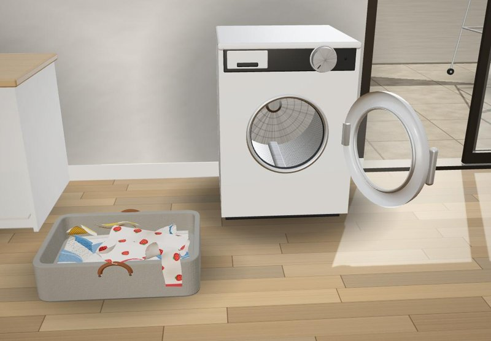
せんたくびより！くるくるドラムとおひさま ぷかぷか！あひるちゃんのおふろ
ぷかぷか！あひるちゃんのおふろ
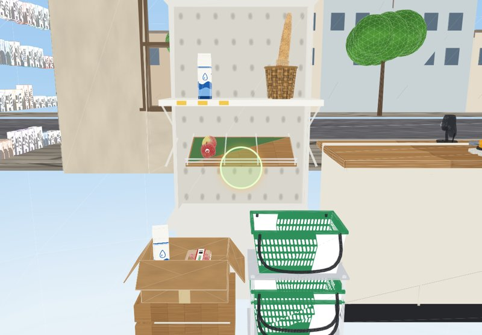
ピッ！ピッ！ちいさなスーパーの一日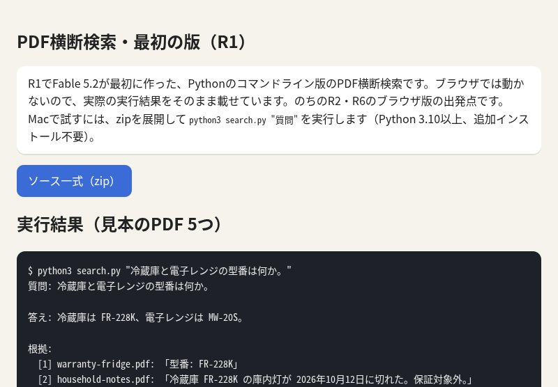
PDF横断検索・最初の版R1・high・Fable 5.2｜Pythonで動くコマンドライン版。実行結果とソース PDF横断検索（R2版）R2・high・Fable 5.2｜初めてのブラウザ版。PDFのページ画像に一致箇所を表示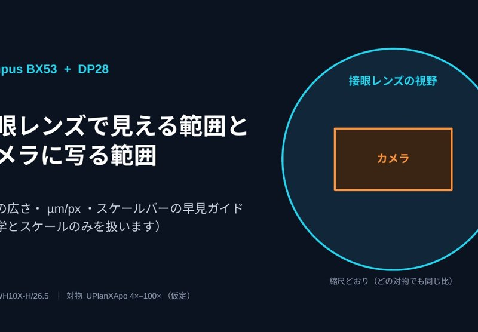
接眼レンズとカメラの写る範囲R4・medium・Fable 5.2｜12枚のスライド。PowerPointとPDFも取れます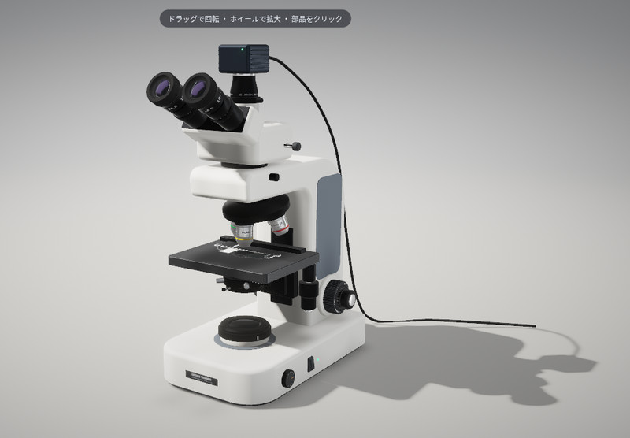
光学顕微鏡 3DR5・xhigh・Fable 5.2｜BX型の光学教育用顕微鏡。光路・分解・倍率比較の初心者モード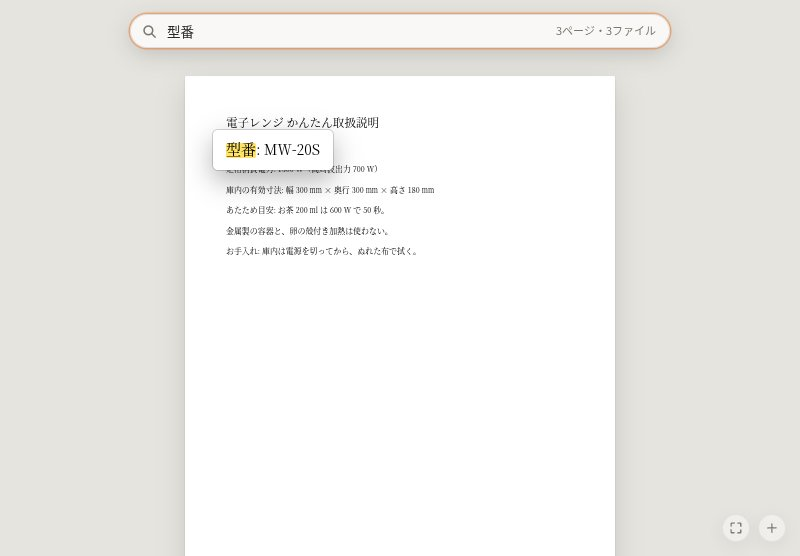
PDF横断検索（完成版）R6・high・Fable 5.2｜＋から自分のPDFフォルダを追加して検索。OCR対応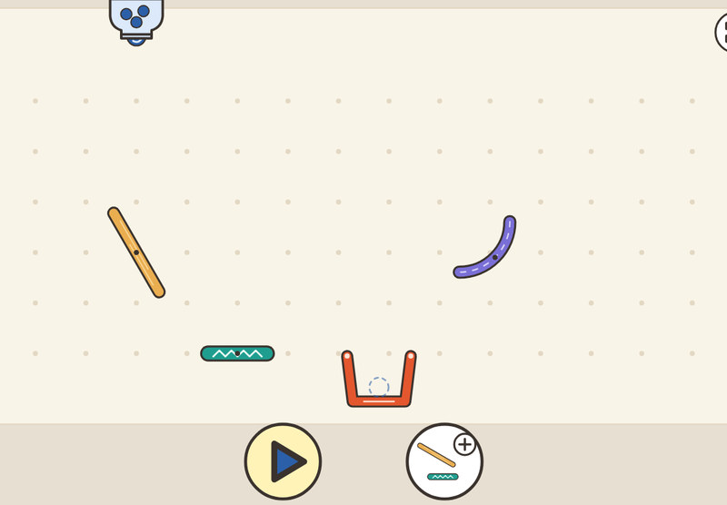
ビー玉のにわR12・high・Fable 5.2｜文字のないビー玉のパズルあそび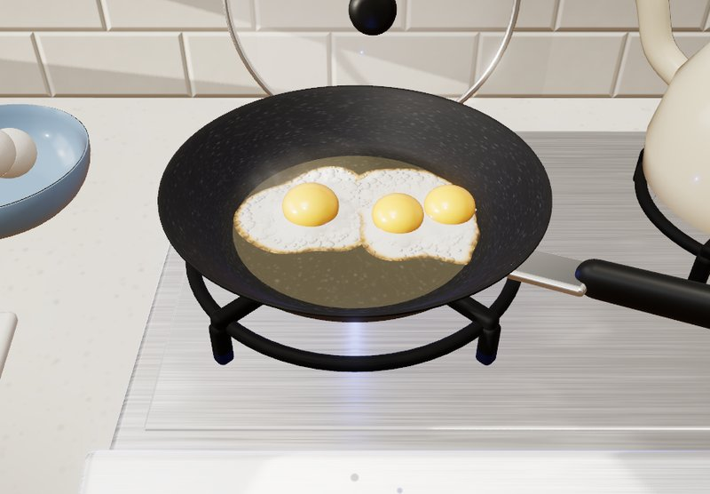
ねぐせパパのおひさま目玉焼きR13・high・Fable 5.2｜パパと朝ごはんの目玉焼きを作って、食べて、洗うまで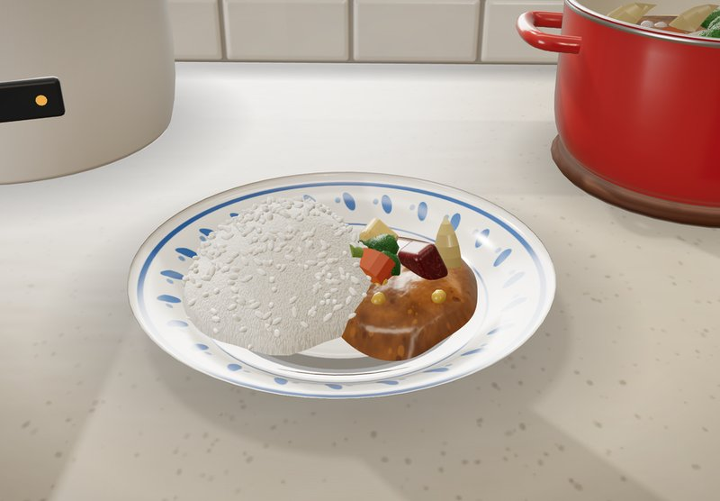
はなまるカレーR14・high・Fable 5.2｜おともだちが来る日にカレーを作って、はなまる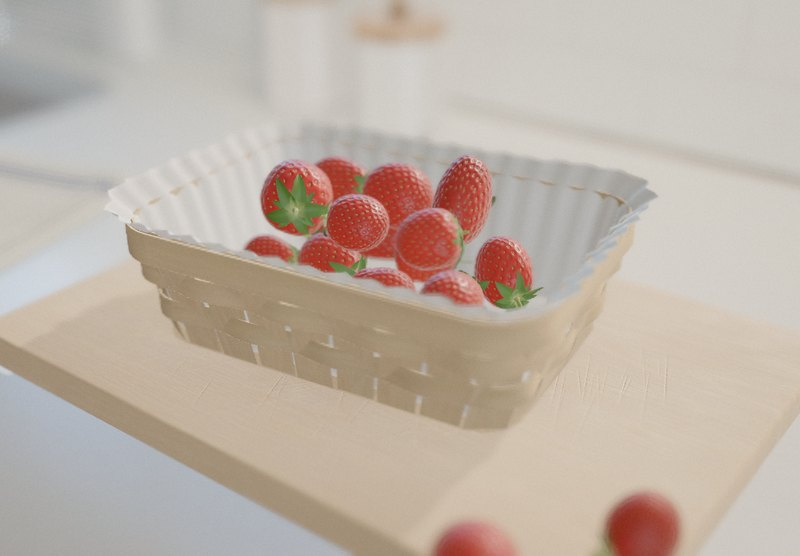
いちごジャムR17A・high・Fable 5.2単独｜おうちのキッチンでいちごジャムを作って、パパにプレゼント。全12場面の完成版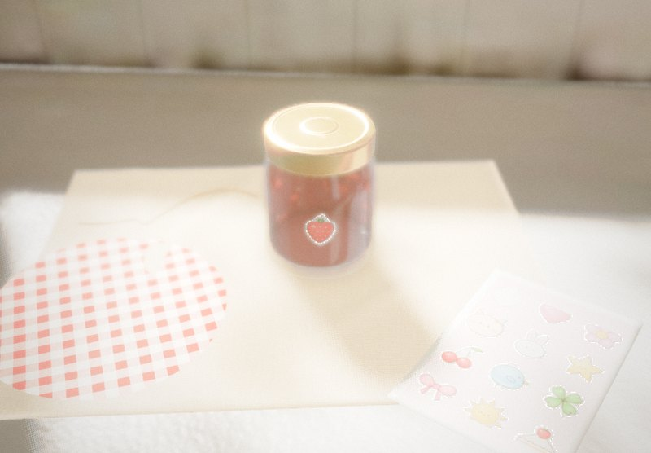
いちごジャムR17B・high・Fable司令塔＋Opus 5.5実装｜おうちのキッチンでいちごジャムを作って、パパにプレゼント。途中版（s01・s08・s10はプレースホルダ。場面は未統合）